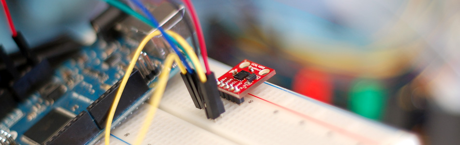

Proximity Sensing with the VCNL4000 + Arduino

The VCNL4000 looks like it is a single piece of silicon, but it really just is an infrared transmitter and receiver in a package that looks like a chip. Unfortunately, but much like many other proximity sensors the VCNL4000 can not easily be used for measuring exact distance. The way it works is that it shines a beam of IR light from an LED, and measures the intensity of light that is bounced pack. But that reading is not linear, so you can't say 5cm is X so 10cm is 2X, it may only be 1.2X. Also note that because it is looking at reflected light, the surface of the object the light is reflecting off of will have an impact on the reading. So a reflective surface will read as a higher value than a dark matte surface even at the same distance.
But what makes this part special is that it also incorporates a pretty sensitive ambient light sensor. Also, unlike many other proximity sensors, the VCNL4000 does not have a simple analog output, but instead outputs a 16bit digital reading. So it is much more sensitive (32x) than what the Arduino's native analog pins could do.
Proximity Sensing
The VCNL4000 data sheet claims a proximity sensing range of 20cm. In reality, I was only seeing a reasonable change inside 10cm, with major change happening within 8cm. Also, 16bits over 20cm is probably hugely overkill, and I doubt you will be able to tell a sub-milimenter difference as the numbers would have you believe. At least not until you get about 3cm away as the sensitivity seems to be exponential. But if you need that kind of result, you probably should get yourself a laser.
{kind=link}
Ambient Light Sensing
The ambient light sensor on this thing is really, really good. It's very stable and in lower light it was able to pickup very small changes in light. Shadows that I could barely notice myself triggered a noticeable change in the reading.
So if you only need short range proximity sensing, save your self a load of cash and just pick up a QRD1114. However, if you need both short-range proximity sensing, and ambient light sensing, this is a really great chip.
Hooking it up
The VCNL4000 is an I2C device. I2C is a 2-wire serial connection, so you just need to connect the SDA (Data) and SCL (Clock) lines to your Arduino for communication. On most arduinos SDA is on analog pin 4, and SCL is on analog pin 5. On an arduino mega, SDA is digital 20, and SCL is digital 21. The Leonardo's have their own special connections.
The board needs 3.3v to run, but it also needs 5V for the IR led that it uses to check the proximity.
Code
Because the board operates on I2C, the code is kinda crazy. Please don't ask how it works. I don't know that I even know, and there are some bitwise operators on there to complicate it too. But if you just want it to work, here is the code.
Note: that the ambient light readings take about 100ms to execute
#include <Wire.h> #define VCNL4000_ADDRESS 0x13 //I2C Address of the board void setup(){ Serial.begin(9600); // Serial's used to debug and print data Wire.begin(); // initialize I2C stuff initVCNL4000(); //initilize and setup the board } void loop(){ unsigned int ambientValue = readAmbient(); //can a tiny bit slow unsigned int proximityValue = readProximity(); Serial.print(ambientValue); Serial.print(" | "); Serial.println(proximityValue); delay(100); //Just here to slow down the printing //note that the readings take about 100ms to execute } void initVCNL4000(){ byte temp = readVCNLByte(0x81); if (temp != 0x11){ // Product ID Should be 0x11 Serial.print("initVCNL4000 failed to initialize"); Serial.println(temp, HEX); }else{ Serial.println("VNCL4000 Online..."); } /*VNCL400 init params Feel free to play with any of these values, but check the datasheet first!*/ writeVCNLByte(0x84, 0x0F); // Configures ambient light measures - Single conversion mode, 128 averages writeVCNLByte(0x83, 15); // sets IR current in steps of 10mA 0-200mA --> 200mA writeVCNLByte(0x89, 2); // Proximity IR test signal freq, 0-3 - 781.25 kHz writeVCNLByte(0x8A, 0x81); // proximity modulator timing - 129, recommended by Vishay } unsigned int readProximity(){ // readProximity() returns a 16-bit value from the VCNL4000's proximity data registers byte temp = readVCNLByte(0x80); writeVCNLByte(0x80, temp | 0x08); // command the sensor to perform a proximity measure while(!(readVCNLByte(0x80)&0x20)); // Wait for the proximity data ready bit to be set unsigned int data = readVCNLByte(0x87) << 8; data |= readVCNLByte(0x88); return data; } unsigned int readAmbient(){ // readAmbient() returns a 16-bit value from the VCNL4000's ambient light data registers byte temp = readVCNLByte(0x80); writeVCNLByte(0x80, temp | 0x10); // command the sensor to perform ambient measure while(!(readVCNLByte(0x80)&0x40)); // wait for the proximity data ready bit to be set unsigned int data = readVCNLByte(0x85) << 8; data |= readVCNLByte(0x86); return data; } void writeVCNLByte(byte address, byte data){ // writeVCNLByte(address, data) writes a single byte of data to address Wire.beginTransmission(VCNL4000_ADDRESS); Wire.write(address); Wire.write(data); Wire.endTransmission(); } byte readVCNLByte(byte address){ // readByte(address) reads a single byte of data from address Wire.beginTransmission(VCNL4000_ADDRESS); Wire.write(address); Wire.endTransmission(); Wire.requestFrom(VCNL4000_ADDRESS, 1); while(!Wire.available()); byte data = Wire.read(); return data; }
Article taken from bildr.org with minor changes - I am the original author of this content